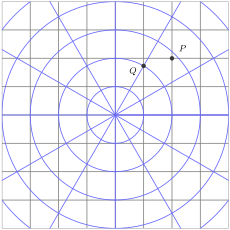
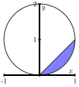
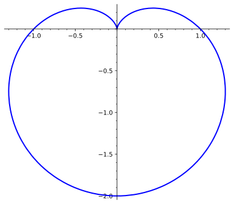

Section3.2Double Integrals in Polar Coordinates and Applications
Subsection3.2.1Double Integrals in Polar Coordinates
The Cartesian coordinates \((x,y)\) of a point in the plane are a systematic and very convenient way to label all the points in the plane. However, there are other reasonable ways to describe the location of a point. One such way is to use polar coordinates \((r,\theta)\text{.}\) Standing at the origin, facing the positive \(x\)-direction, you first turn counter-clockwise \(\theta\) units (usually measured in radians or degress) and then walk straight \(r\) units. It’s good to think of the plane as being covered simultaneously by two grids: the Cartesian in gray and the polar in blue. Every point the plane now lies simultaneously on both grids.

Figure3.2.1.
Activity3.2.1.
What are the Cartesian and polar coordinates of the points \(P\) and \(Q\text{?}\)
Converting between rectangular and polar coordinates.
Converting from rectangular to polar..
If we are given the rectangular coordinates \((x,y)\) of a point \(P\text{,}\) then the polar coordinates \((r,\theta)\) of \(P\) satisfy
\begin{equation*}
r = \sqrt{x^2+y^2} \ \ \ \ \ \text{ and } \ \ \ \ \ \tan(\theta) = \frac{y}{x}, \text{ assuming } x \neq 0.
\end{equation*}
Converting from polar to rectangular..
If we are given the polar coordinates \((r,\theta)\) of a point \(P\text{,}\) then the rectangular coordinates \((x,y)\) of \(P\) satisfy
\begin{equation*}
x = r\cos(\theta) \ \ \ \ \ \text{ and } \ \ \ \ \ y = r\sin(\theta).
\end{equation*}
Note: The angle \(\theta\) in the polar coordinates of a point is not unique. We could replace \(\theta\) with \(\theta + 2 \pi\) and still be at the same terminal point. In addition, the sign of \(\tan(\theta)\) does not uniquely determine the quadrant in which \(\theta\) lies, so we have to determine the value of \(\theta\) from the location of the point. In other words, more care has to be paid when using polar coordinates than rectangular coordinates.
Activity3.2.2.
Find a polar equation for the circle \(x^2 + (y-2)^2 = 4\)
Activity3.2.3.
Convert the following polar equations to Cartesian equations:
(a)
\(r\cos\theta = 9\)
(b)
\(r^2 = 2r\cos\theta\)
(c)
\(r = \dfrac{16}{4\cos\theta -\sin\theta}\)
Activity3.2.4.
Sketch the polar rectangular region \(R = \lrbrace{(r,\theta)\mid 2\leq r\leq 3, 0\leq \theta\leq \dfrac{\pi}{2}}\)
Activity3.2.5.
Consider \(f(x,y) = x+y\) and the region \(R = \lrbrace{(x,y) \mid 4\leq x^2 + y^2 \leq 9, x\geq 0}\)
(a)
Sketch and label \(R\text{.}\)
(b)
Which of the following best describes the region \(R\text{?}\)
Type I
Type II
Both Type I and Type II
Neither Type I nor Type II
(c)
Set up (but don’t evaluate) the double integral \(\ds \iint_R f(x,y)\, dA\) as a sum of iterated integrals.
In order to define a double integral in polar coordinates, we will begin by setting up a Riemann sum in the same way as we did for the Cartesian case. A rectangle in polar coordinates \([a,b] \times [c,d]\) looks like part of an annulus. The radius satisfies \(a \leq r \leq b\) and the angle satisfies \(c \leq \theta \leq d\text{.}\) Divide each interval into many small subintervals, \([r_i, r_{i+1}]\) and \([\theta_i, \theta_{i+1}]\text{,}\) and choose a sample point \((r_i^*, \theta_i^j)\) in each subset \([r_i, r_{i+1}]\) and \([\theta_j, \theta_{j+1}]\text{.}\) Our first incorrect attempt would be
\begin{equation*}
\iint_R f(r,\theta) \, dA = \lim_{n,m \to \infty} \sum_{i=1}^n \sum_{j=1}^m f(r_i^*, \theta_j^*) \Delta r \Delta \theta
\end{equation*}
where \(\Delta r = r_{i+1}-r_i\) and \(\Delta \theta = \theta_{j+1}-\theta_j\text{.}\) It’s easy to see that this is incorrect. The unit circle is the polar rectangle \([0,1] \times [0,2\pi]\text{.}\) By taking \(f(r,\theta) = 1\text{,}\) this definition of a polar integral would give the area as \(2\pi\text{.}\) This is clear incorrect because we know that the area is \(\pi\text{.}\) The problem is that \(\Delta r \Delta \theta\) does not converge to the area element \(dA\) as their sizes approach zero.
To fix this, we need to account for the distortion of the area of small rectangles in polar coordinates. The area \(\Delta A\) of \([r_i, r_{i+1}] \times [\theta_j, \theta_{j+1}]\) is
In the limit, as the number of subintervals approaches infinity, all the deltas will become the letter \(d\text{,}\) and the endpoints of each subinterval will approach a single value. So, the limit will be
\begin{equation*}
dA = \frac{d\theta}{2}(r + r)dr = r \, dr \, d\theta.
\end{equation*}
In contast to the area element in Cartesian coordinates, \(dA = dx \, dy\text{,}\) this is the area element in polar coordinates.
Double integrals in polar coordinates.
The double integral \(\iint_D f(x,y) \, dA\) in rectangular coordinates can be converted to a double integral in polar coordinates as
\begin{equation*}
\iint_D f(r\cos(\theta), r\sin(\theta)) \, r \, dr \, d\theta\text{.}
\end{equation*}
Activity3.2.6.
Sketch the region \(R = \lrbrace{(r,\theta)\mid 1\leq r\leq 2, -\dfrac{\pi}{2}\leq \theta\leq \dfrac{\pi}{2}}\) and then evaluate \(\ds \iint_R x\, dA\)
Activity3.2.7.
Let \(f(x,y) = e^{x^2+y^2}\) on the disk \(D = \{(x,y) : x^2 + y^2 \leq 1\}\text{.}\) We will evaluate \(\iint_D f(x,y) \, dA\text{.}\)
(a)
Which of the following best describes why you cannot proceed with evaluating the iterated integral
\begin{equation*}
\iint_D f(x,y) \, dA = \int_{-1}^1 \int_{-\sqrt{1-x^2}}^{\sqrt{1-x^2}} e^{x^2+y^2} \, dy \, dx?
\end{equation*}
We cannot describe the unit disk \(D\) Cartesian coordinates.
The bounds of integration sqauare roots.
The bounds of integration are not constants.
We cannot evaluate this iterated integral, because \(e^{x^2 + y^2}\) does not have an elementary antiderivative with respect to either \(x\) or \(y\text{.}\)
(b)
Express the integral as an iterated integral in polar coordinates
\begin{equation*}
\iint_D f(x,y) \, dA = \int_a^b \int_{r = h_1(\theta)}^{r = h_2(\theta)} f(r\cos \theta, r \sin \theta) \, r \, dr \, d\theta
\end{equation*}
and compute the integral.
While there is no firm rule for when polar coordinates can or should be used, they are a natural alternative anytime the domain of integration may be expressed simply in polar form, and/or when the integrand involves expressions such as \(\sqrt{x^2 + y^2}.\)
Activity3.2.8.
Let \(f(x,y) = \sqrt{16-x^2-y^2}\) and let \(R\) be the unit disk on the \(xy-\)plane
(a)
Convert \(f(x,y)\) into a function of \(r\) and \(\theta\text{.}\)
(b)
Describe \(R\) using polar coordinates.
(c)
Set up and evaluate the integral \(\ds \iint_R f(x,y)\, dA\)
Activity3.2.9.
Let \(f(x,y) = x+y\) and \(D = \{(x,y) : x^2 + y^2 \leq 4\}\text{.}\)
Sketch the region \(D\) and then write the double integral of \(f\) over \(D\) as an iterated integral in rectangular coordinates.
Write the double integral of \(f\) over \(D\) as an iterated integral in polar coordinates.
Evaluate one of the iterated integrals. Why is the final value you found not surprising?
Activity3.2.10.
Consider the circle given by \(x^2 + (y-1)^2 = 1\) as shown in Figure 3.2.2.

Figure3.2.2.The graphs of \(y=x\) and \(x^2 + (y-1)^2 = 1\text{,}\) for use in Activity 3.2.10.
Determine a polar curve in the form \(r = f(\theta)\) that traces out the circle \(x^2 + (y-1)^2 = 1\text{.}\) (Hint: Recall that a circle centered at the origin of radius \(r\) can be described by the equations \(x = r \cos(\theta)\) and \(y = r \sin(\theta)\text{.}\))
Find the exact average value of \(g(x,y) = \sqrt{x^2 + y^2}\) over the interior of the circle \(x^2 + (y-1)^2 = 1\text{.}\)
Find the volume under the surface \(h(x,y) = x\) over the region \(D\text{,}\) where \(D\) is the region bounded above by the line \(y=x\) and below by the circle (this is the shaded region in Figure 3.2.2).
Explain why in both (b) and (c) it is advantageous to use polar coordinates.
Activity3.2.11.
Show that the volume of a sphere of radius \(R\) is given by \(\dfrac{4\pi}{3}R^3\) by using a polar double integral.
Activity3.2.12.
Evaluate the integral \(\ds \iint_D r^2\cos\theta\,r\,dr\,d\theta\text{,}\) where \(D\) is the region bounded by the polar axis and the lower portion of the cardioid \(r = 1 - \sin\theta\)
(a)
The plot of \(r = 1-\sin\theta\) is given below. Use it to find the bounds on \(\theta\text{.}\)

(b)
What is the area enclosed by the cardioid?
Activity3.2.13.
Evaluate the iterated integral
\begin{equation*}
\int_{0}^{2} \int_0^{\sqrt{4-x^2}} e^{-x^2-y^2} \, dy \, dx
\end{equation*}
by converting to polar coordinates.
Subsection3.2.2Applications of Double Integrals
The double integral and area.
Given a closed, bounded region \(D\) in the plane, the area of \(D\text{,}\) denoted \(A(D)\text{,}\) is given by the double integral
\begin{equation*}
A(D) = \iint_D 1 \, dA.
\end{equation*}
Activity3.2.14.
Find the area of the bounded region \(D\) between the curves
\begin{equation*}
y = 1-x^2 \ \ \ \ \ \text{ and } \ \ \ \ \ y=x-1.
\end{equation*}
The double integral and average Values.
The average value of a function \(f(x,y)\) on a closed, bounded region \(D\) in the plane is given by
\begin{equation*}
\frac{1}{A(D)} \iint_D f(x,y) \, dA.
\end{equation*}
where \(A(D)\) is the area of \(D\text{..}\)
Activity3.2.15.
The rectangle \(R = [-2,2] \times [0,2]\) describes a metal place whose temperature is given by \(T(x,y) = 5x^2y^3\text{.}\) Find the average temperature of the plate.
The mass of a lamina.
If \(\delta(x, y)\) describes the density of a lamina defined by a planar region \(D\text{,}\) then the mass of \(D\) is given by the double integral \(\iint_D \delta(x,y) \, dA\text{.}\)
Activity3.2.16.
Charge is distributed over the triangular region \(D\) with vertices at \((0,1)\text{,}\)\((1,1)\text{,}\) and \((1,0)\) so that the density at \((x,y)\) is \(\sigma(x,y) = xy\text{.}\) Find the total charge.
The center of mass of a lamina.
The coordinates \((\overline{x}, \overline{y})\) of the center of mass of a lamina\(D\) with density \(\delta = \delta(x,y)\) are given by
Notice that the denominator is the mass of the lamina.
Activity3.2.17.
Find the mass and center of mass of a triangular lamina with vertices at \((0,0)\text{,}\)\((1,0)\text{,}\) and \((0,2)\) if the density function is \(\delta(x,y) = 1 + 3x + y\text{.}\)
Activity3.2.18.
The density at any point on a semicircular lamina is proportional to the distance from the center of the circle. Find the center of mass of the lamina.
Probability density functions.
A function \(f\) of a single variable is a probability density function (of a continuous random variable) if \(f(x) \geq 0\text{,}\)\(\int_{-\infty}^\infty f(x) \, dx = 1\text{,}\) and
\begin{equation*}
\mathbb{P}(a \leq X \leq b) = \int_a^b f(x) \, dx
\end{equation*}
A function \(f\) of two variables is a joint density function (for random variables \(X\) and \(Y\)) if \(f(x,y) \geq 0\text{,}\)
\begin{equation*}
\iint_{\R^2} f(x,y) \, dA = 1,
\end{equation*}
and
\begin{equation*}
\mathbb{P}((X,Y) \in D) = \iint_D f(x,y) \, dA.
\end{equation*}
Activity3.2.19.
If the joint density function for \(X\) and \(Y\) is given by
\begin{equation*}
f(x,y) = \begin{cases} C(x + 2y) \amp \text{ if } 0 \leq x \leq 10, \, 0 \leq y \leq 10 \\ 0 \amp \text{ otherwise} \end{cases}
\end{equation*}
find the value of the constant \(C\) that makes \(f\) a probability density function. Then find \(\mathbb{P}(X \leq 7, Y \geq 2)\text{.}\)
Activity3.2.20.
In this activity, you will determine the appropriate constant \(k \geq 0\) so that the function
\begin{equation*}
f(x) = k e^{-x^2}
\end{equation*}
is a probability density function. Notice that \(f(x) \geq 0\text{,}\) so we only need to make sure that \(\int_{-\infty}^{\infty} e^{-x^2} \, dx = 1\text{.}\) In a previous activity we noticed that you cannot express an antiderivative for \(f\) in terms of elementary functions. Instead, you will arrive at the correct value for \(k\) via a somewhat circuitous route that involves a double integral in polar coordinates.
As the probability density function for the normal distribution, this functions plays an enormous role in statistics, probability, physics, biology, and many other fields. It’s vitally imporant that are able to compute with it.
(a)
Let \(D_R\) be the disk of radius \(R\) centered at the origin and let \(g(x,y) = e^{-x^2 - y^2}\text{.}\) Compute
\begin{equation*}
\iint_{D_R} g(x,y) \, dA
\end{equation*}
(b)
Take the limit as \(R \to \infty\) of your answer to the previous question to determine
\begin{equation*}
\iint_{\R^2} g(x,y) \, dA = \lim_{R \to \infty} \iint_{D_R} g(x,y) \, dA
\end{equation*}
(c)
Now think about the integral \(\iint_{\R^2} g(x,y) \, dA\) as an iterated integral in Cartesian coordinates. Explain why